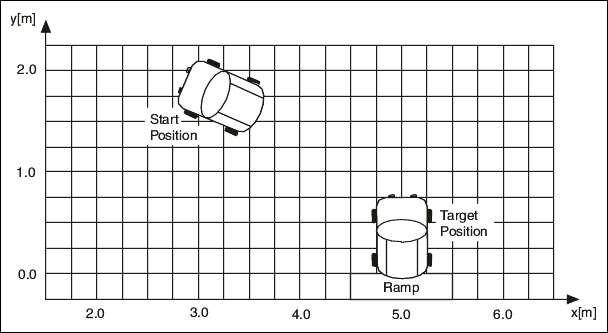

When you design a fuzzy system, linguistic variables represent, in words, the input variables and output variables of the system you want to control.
When you create a linguistic variable to represent an input or output variable, decide how many linguistic terms, or categories of values of the linguistic variable, you want to create. Linguistic variables usually have an odd number of linguistic terms, with a middle linguistic term and symmetric linguistic terms at each extreme. In most applications, three to seven linguistic terms are sufficient for categorizing the values of a linguistic variable.
Consider an example in which you want to automate a vehicle to park itself from an arbitrary starting position. A driver can control the vehicle by constantly evaluating the current status of the vehicle, such as the distance from the target position and the orientation of the vehicle, to derive the correct steering angle. The following image illustrates this example.

You can define two input linguistic variables for this example. Vehicle Position x represents the vehicle position in relation to the destination. Vehicle Orientation β represents the orientation of the vehicle. You also can define an output linguistic variable, Steering Angle φ, to represent the steering angle of the vehicle that you want to control.
You can define linguistic terms of Left, Left Center, Center, Right Center, and Right for the Vehicle Position x input linguistic variable to describe the possible positions of the vehicle in relation to the destination. You can define linguistic terms of Left Down, Left, Left Up, Up, Right Up, Right, and Right Down for the Vehicle Orientation β input linguistic variable to describe the possible orientations of the vehicle. The linguistic terms of the Steering Angle φ output linguistic variable must represent both the direction and magnitude that the steering angle changes. Therefore, you can use the linguistic terms Negative Large, Negative Medium, Negative Small, Zero, Positive Small, Positive Medium, and Positive Large for this output linguistic variable.
The next step in designing a fuzzy system is creating membership functions that correspond to the linguistic terms you define.